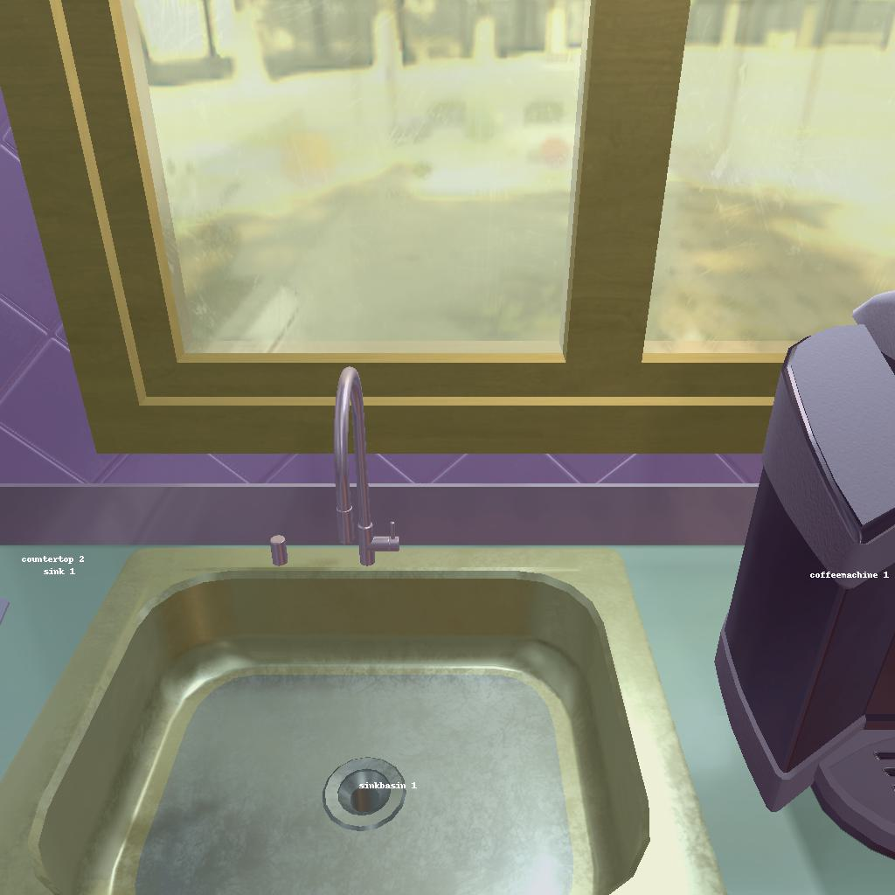

---------------------------------------------------------task: 12---------------------------------------------------------
--------------------------------------------------------------------------------------------------------------------------------------------------------------------
--------------------------------------------------------------------------------------------------------------------------------------------------------------------
Step:--------------------------------------------------------------------------0-------------------------------------------------------------------------------
----------------------------------------
VLM Prompt:
Image1:
**Instruction**
1. Analyze the provided image to identify all visible household objects, focusing on those relevant to the task description "clean some tomato and put it in countertop."
2. Use the analysis of the image and the task hint "The agent must find an object of the desired type, pick it up, go to a sink or a basin, clean the object with a sink or basin, and then find the correct location to place it and put it down there. The agent does not need to use soap bottle or faucet to clean the object, and the agent just needs to do action that is "clean the object with the sink or sink basin"." to answer the question: what is the most reasonable action in the choices for the task description "clean some tomato and put it in countertop"?
4. Decide and write the answer using the template: The answer is: (i): , where i is the real number. If there is no desired object in the image, search every place based on **Initial Observation** to find the object. And if no one is exactly correct, choose a similar answer.
**Initial Observation**
You are in the middle of a room. Looking quickly around you, you can see cabinet (1-6), microwave (1), countertop (1-2), coffeemachine (1), toaster (1), sink (1), sinkbasin (1), fridge (1)
**Answer Choices**
(1): go to cabinet 1
(2): go to cabinet 2
(3): go to cabinet 3
(4): go to microwave 1
(5): go to cabinet 4
(6): go to cabinet 5
(7): go to cabinet 6
(8): go to countertop 1
(9): go to coffeemachine 1
(10): go to toaster 1
(11): go to countertop 2
(12): go to sink 1
(13): go to sinkbasin 1
(14): go to fridge 1
**Answer**
Let's think step by step by following the instructions.
----------------------------------------
----------------------------------------
Original Response:
First, we need to find a tomato. The tomato is most likely to be found in the fridge, so we should go there first to pick it up.
Then, we need to clean the tomato. According to the task hint, we don't need soap or a faucet, we just need to clean it with a sink or sink basin. In the image, we can see a sink basin clearly labeled as "sinkbasin 1". So we should go there to clean the tomato.
Finally, we need to put the cleaned tomato on a countertop. In the image, we see two countertops labeled as "countertop 1" and "countertop 2". We can choose either one to place the tomato.
The most reasonable actions in sequence for the task "clean some tomato and put it in countertop" would be:
- Go to the fridge to pick up a tomato
- Go to the sink basin to clean the tomato
- Go to a countertop to place the cleaned tomato
Based on the **Initial Observation**, we can find the fridge and sink basin, but not the exact location of the tomato or the specific countertop to place it. We should search every place to find the tomato. Once the tomato is found and cleaned, we can choose either countertop to place it.
The answer is: (14): go to fridge 1 (to pick up the tomato), followed by (13): go to sinkbasin 1 (to clean the tomato), and finally either (8): go to countertop 1 or (11): go to countertop 2 (to place the cleaned tomato).
----------------------------------------
----------------------------------------
>>> Refine Original VLM Response and Get Pure Action: go to fridge 1 (to pick up the tomato), followed by (13): go to sinkbasin 1 (to clean the tomato), and finally either (8): go to countertop 1 or (11): go to countertop 2 (to place the cleaned tomato)
----------------------------------------
-----------------------------------------------------------------
Running time: 12.710270404815674 seconds
Total Money: 5.2984399999999985
-----------------------------------------------------------------
-----------------------------------------------------------------
Text Observation:Nothing happens.
-----------------------------------------------------------------
UNSUCCEED